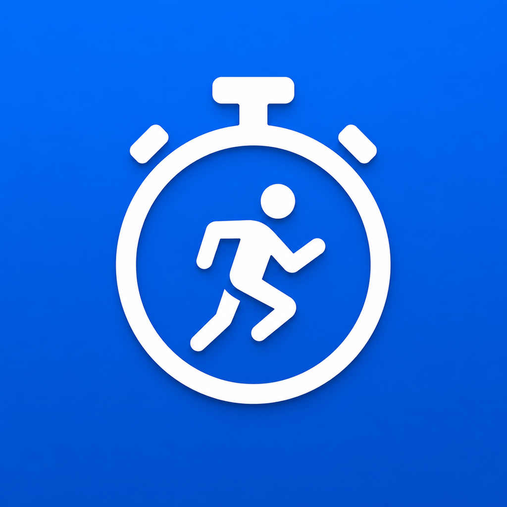

UnitX Smart Unit Converter
Everyday answers, without the busywork.
Natural input, manual controls, and camera-assisted entry make practical conversions feel immediate.
iPhone & Apple Watch · UtilitiesFeatured products
Focused Apple-platform apps built around one useful job at a time—clear enough to use in the moment, capable enough to return to.
Everyday answers, without the busywork.
Natural input, manual controls, and camera-assisted entry make practical conversions feel immediate.
iPhone & Apple Watch · UtilitiesExact construction math for the field.
Fractions, feet and inches, and specialist trade tools where a vague answer is not enough.
iPhone · Productivity
Know the number that moves your run forward.
Goal pace, race prediction, and training tools for runners who want a more useful plan.
iPhone, Watch & widgets · Health & fitnessClear commercial next steps for trade businesses.
iPhone · Small businessKeep jobs, schedules, and follow-ups in view.
iPhone · Small businessThe calm ledger for solo music teachers.
Attendance, scheduling, notes, practice assignments, and balances—without parent logins or card fees.
iPhone & iPad · Productivity